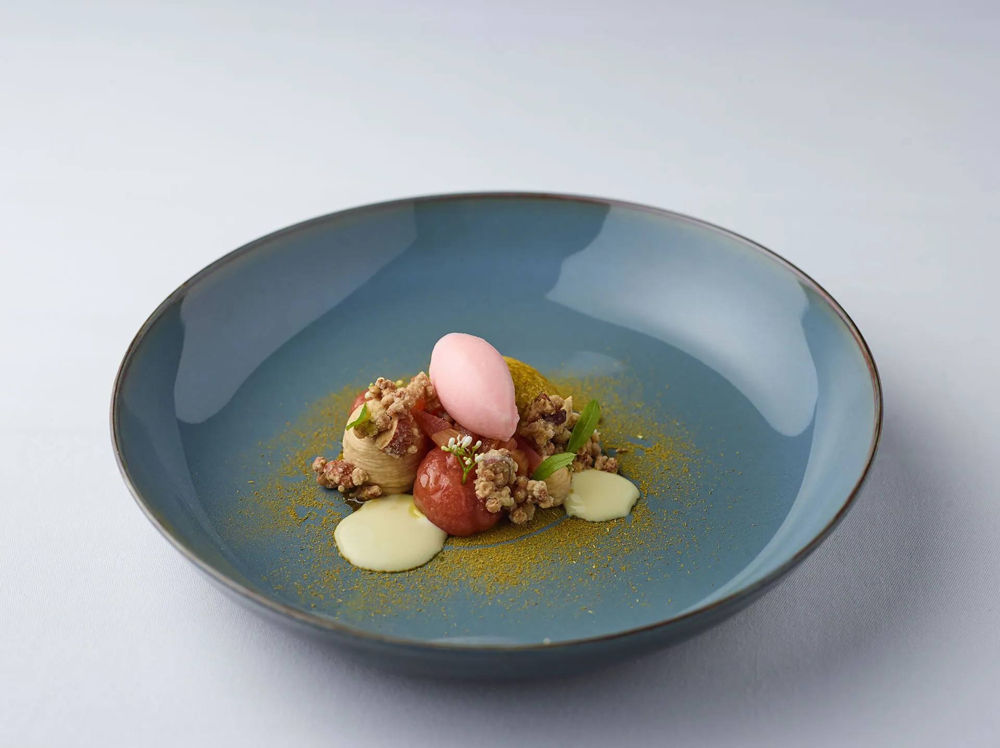
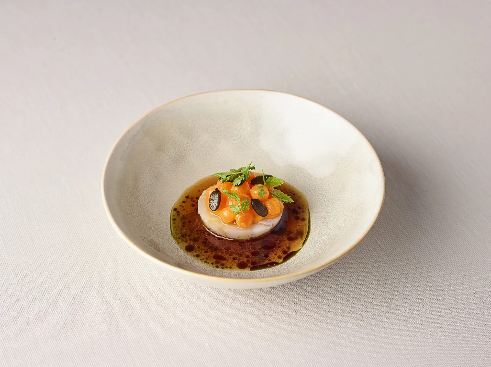

Dinner.
Ob Sie sieben, acht oder alle zehn Gänge geniessen: Jeder Gang wird von der Saison beeinflusst und aus meist regionalen, sorgfältig ausgesuchten Produkten frisch für Sie zubereitet.
- Dinner
- CHF 198
- Getränkebegleitung mit Alkohol
- CHF 115
- Getränkebegleitung ohne Alkohol
- CHF 77
Alle Preise inkl. 8.1 % MwSt.

Businesslunch.
Jeweils donnerstags, 12.00 bis 14.30 Uhr.
- 3-Gänge-Menü
- CHF 98
- 4-Gänge-Menü
- CHF 110
- 5-Gänge-Menü
- CHF 122
- Dessert
- CHF 18
Alle Preise inkl. 8.1 % MwSt.

Zu jedem Gang ein Glas.
| mit Alkohol | ohne Alkohol | |
| 7 Gläser | 115 | 77 |
| 8 Gläser | 130 | 88 |
| 9 Gläser | 145 | 99 |
| 10 Gläser | 160 | 110 |
Alkoholfrei, selbst gemacht · je CHF 11
- Apfel — Hibiskus11
- Thaibasilikum — Kalamansi11
- Kräutershrub11
- Kapuziner — Sauerampfer11
- Japanese Dry11
- Zitronenthymian11
- Cassis — Cranberry — Schwarzer Tee11
- Kirsche — Miso11
- Granatapfel — Gewürze11
- Quitte — Vanille11
- Rooibos - Tonka11
Alle Preise in CHF (inkl. MwSt.)